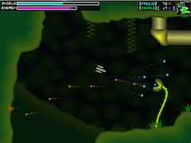
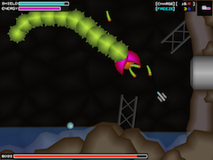

Civil war rages across the galaxy: a war that began four years ago, sparked by a simple rescue mission that you carried out. Each of the five member species of the Joint Federation, and even the three known SapiAIs, have since been pulled into the conflict, with no end in sight.
As Maj. Shawna “Hopper” Jemison, a pilot for the UHP Interstellar Patrol Force, you must return to the days of that fateful mission four years ago. Your mission: to rescue the trapped colonists from a planet-wide disaster, to uncover the secret of Zenith Colony that would turn out to begin a war, and to defeat a mysterious enemy that threatens all of galactic civilization.
Azimuth is a metroidvania game, and something of an homage to the previous greats of the genre (Super Metroid in particular). You will need to pilot your ship, explore the inside of the planet, fight enemies, overcome obstacles, and uncover the storyline piece by piece. Azimuth features a huge game world to explore, lots of little puzzles to solve, dozens of weapons and upgrades to find and use, and a wide variety of enemies and bosses to tangle with.
Azimuth is Free Software, in both senses of the word: you can download and play it at no cost, and you are free to redistribute it and/or modify it under the terms of the GNU General Public License as published by the Free Software Foundation, either version 3 of the License, or (at your option) any later version.